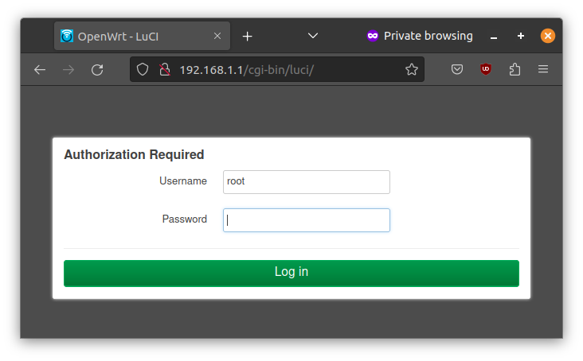
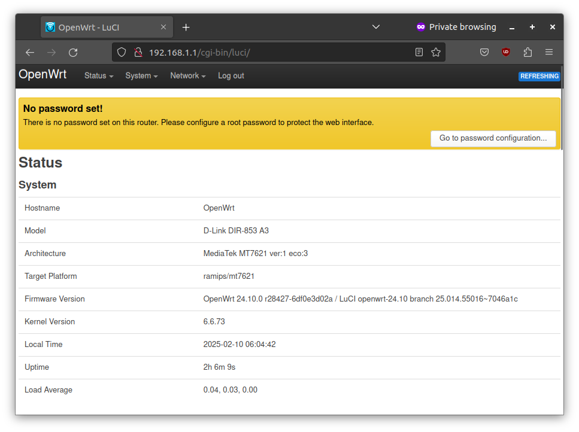

Connecting to the Router
Connect your laptop to the router using ethernet cable to configure it.
You can configure the router by connecting it to a laptop via ethernet. Connect the laptop ethernet port to one of the LAN ports (one of the yellow ports).
Network Setup
After connecting, setup the laptop with manual IP address with the following settings.
IP Address: 192.168.1.2
Subnet mark: 255.255.255.0
Gateway: 192.168.1.1
Ping Test
After the settings are done, you can verify if you can reach the router by running the ping command
from terminal/command promt.
$ ping 192.168.1.1
PING 192.168.1.1 (192.168.1.1) 56(84) bytes of data.
64 bytes from 192.168.1.1: icmp_seq=1 ttl=64 time=0.675 ms
64 bytes from 192.168.1.1: icmp_seq=2 ttl=64 time=0.680 ms
64 bytes from 192.168.1.1: icmp_seq=3 ttl=64 time=0.682 ms
^C
--- 192.168.1.1 ping statistics ---
3 packets transmitted, 3 received, 0% packet loss, time 2029ms
rtt min/avg/max/mdev = 0.675/0.679/0.682/0.003 ms
The Router Admin Interface
Open your browser and visit http://192.168.1.1/ or http://openwrt.lan.

It will ask you to login. Press Log in without entering any password.
You'll be see the status page of the router.

Congratulations! You have sucessfully connected to the router. The next step is to secure the device.